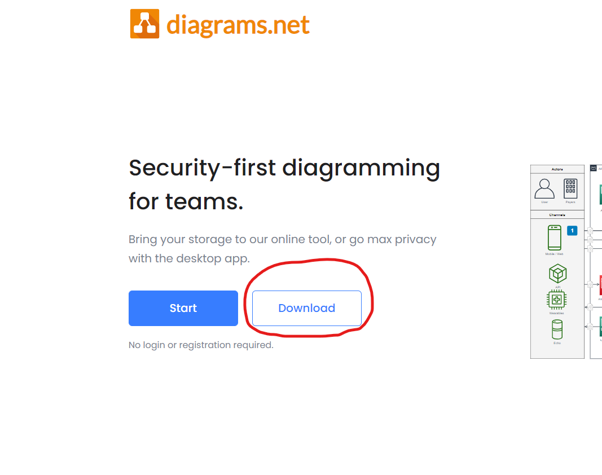
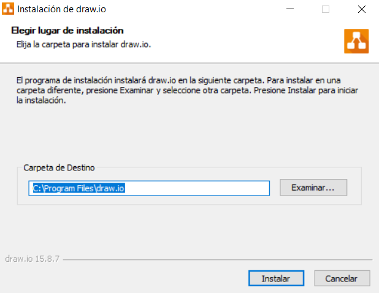

Draw.io es un programa portable de diagramas muy útil y versátil. Para descargarlo, podemos hacerlo accediendo a su página web y haciendo click en "Download"
El botón nos enviará a una página donde podremos elegir el sistema operativo (en mi caso Windows). El archivo "No instaler" es el portable que sirve para cualquier tipo de sistema.

El instalador nos dejará elegir la ruta de instalación. En mi caso dejaré la ruta que aparece por defecto. Seguidamente, pulsamos "Instalar" y el programa empezará a instalarse automáticamente en nuestro ordenador.
